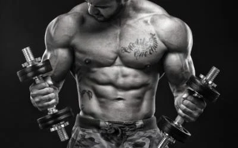

Maximize Your Gym Time: A Look At The Most Productive Muscle Building Exercises
A workout is made up of only so many sets and exercises. Constructing a workout without a purpose, and without the use of the best available tools will only waste your time. If you want to gain muscle and strength at the fastest rate possible you will need to choose the best possible exercises.
The following exercises are the best of the best. You will notice that they generally fall into three categories:
- Barbell Exercises.
- Dumbbell Exercises.
- Bodyweight Exercises.
When you begin to explore the muscle building workouts on Muscle & Strength, you will notice that the bulk of these routines make use of barbells and dumbbells. These movements are often performed first for a bodypart, and are then followed by machine and cable exercises. While some machines and cables can be beneficial, they are rarely as good as their barbell or dumbbell counterparts.
A Smith machine bench press is not as good as a barbell or dumbbell bench press. A leg press is not as effective as deep squats. And lat pull downs are nowhere near as effective as pull ups
The Top 7 Muscle Building Exercises
Squats are the king of all muscle and strength building exercises. No workout should be without deep squats. They are performed with a barbell, generally in a squat rack. Squats not only build massive legs, but also stress most of the upper body. They are like a hormonal nuclear bomb – destroying the entire body, forcing it to get bigger and stronger with every rep.
Deadlifts. Second only to squats in effectiveness (and a very close second at that), deadlifts are another manmaker that will pack on slabs of muscle mass while helping you become as strong as a bear. Like squats, deadlifts are a barbell only exercise.
Dips. Dips are often called the upper body squat, and for good reason. Dips work the shoulders, chest and triceps very hard, and are a great overall exercises for building a beefy upper body. Dips should be performed at a parallel bar dipping station.
Pull Ups. It seems that even the strongest and most fit lifters can barely squeak out more than a few pull ups. The pull up is an excellent exercise for building the back and biceps, and should be used instead of inferior exercises such as the lat pull down when possible.
Bench Press. The bench press is an upper body staple. There are several highly effective variations including the flat bench barbell press, flat bench dumbbell bench press, incline bench barbell press and incline dumbbell bench press.
Overhead Press. As with the bench press, there are numerous quality variations of the overhead press that can be used. Nearly all seated and standing dumbbell and barbell overhead presses are solid choices. You may also use the Arnold dumbbell press, and behind the neck overhead presses. Another popular press variation is the standing push press.
Rows. Both barbell and dumbbell rows are tremendous upper back exercises. Old school barbell T-bar rows are also a solid choice. While cable and machine lifts are generally sub-par, seated cable rows can be very challenging and effective.
The Best Exercises By Bodypart
5 Most Effective Chest Building Exercises
- Bench Press. The king of all upper body muscle building movements. The bench press is so popular that it is often seen as having it's own training day - bench press Monday.
- Incline Bench Press. The first choice of many top pro bodybuilders.
- Dips. Once considered the upper body squat, dips are a great compliment to any bench press movement.
- Dumbbell Bench Press. You will really be able to feel the chest work with this pressing variation.
- Incline Dumbbell Bench Press. A solid alternative to the incline barbell press.
5 Most Effective Back Building Exercises
- Deadlifts. Nothing builds beefy backs like the deadlift. The sheer act of holding a barbell with heavy weight places the lats under an incredible amount of stress.
- Pull Ups. A far superior choice to lat pull downs. If you can do one, try for two. If you can do two, try for three! If you can't do them at all use rack chins.
- Barbell Row. No back building workout should be without a heavy row, and barbell rows are at the top of the list.
- Dumbbell Row. No back building workout should be without a heavy row, and barbell rows are at the top of the list.
- Power Clean. No back building workout should be without a heavy row, and barbell rows are at the top of the list.
5 Most Effective Shoulder Building Exercises
- Military Press. This exercise has been a staple of great workouts for decades on end.
- Push Press. Very similar to the military press, but utilizing more of an Olympic lifting-style explosiveness.
- Bench Press. Yes, you read that correctly. The bench press is an amazing front delt builder. In fact, if your chest day involves several pressing movements there's a good chance you won't need any direct front delt work on shoulder day.
- Seated Behind The Neck Press. Go no deeper than arms parallel to the floor, and this is a rock solid choice.
- Seated Dumbbell Press. A little easier on the shoulders for many because the dumbbells can be placed in a more natural position.
5 Most Effective Leg Building Exercises
- Squats. The king of all muscle building lifts.
- Front squat.Another top choice of bodybuilding beef kings. Front squats can be tricky to learn, but you will be rewarded with big wheels.
- Stiff Leg Deadlifts. Beef up your hamstrings!
- Leg Press. If you don't have access to a squat rack this is your next best bet.
- Barbell Lunge. Lunges are another quality leg-building staple.
5 Most Effective Arm Building Exercises
- Chin Ups. A shocker, but chin ups (performed with palms toward the face) are a beastly bicep builder, perhaps even better than straight bar curls.
- Close Grip Bench Press. This exercise allows for a heavy amount of weight to be placed on the triceps.
- Dips. Much better than most tricep isolation exercises.
- Barbell Curls. A classic. Just don't curl in the squat rack.
- Seated Two Arm Dumbbell Tricep Extension. Allows you to lift heavy weight and reach a deep stretch. You will need a good spotter.